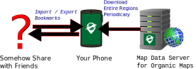

Desert Atlas
An Easy Self-Hosted Online Map

Overview
- Desert Atlas: An Easy Self-Hosted Online Map
- Self-hosting: motivations
- OpenStreetMap: challenges
- The Sandstorm platform: bringing self-hosting to the masses
Big Tech Mapping
Google Maps
- üëÄ Where on the map you‚Äôre looking
- üëÄ Everything you‚Äôre searching for
- üëÄ What bookmarks you save and share
Private Mapping

Organic Maps (or OSMAnd)
- ✅ Share coarse data, rarely
- ❌ Hard to share or collaborate
- KML files or
geo:// links
- External website (Google or OSM based)
What is self-hosting
You are the cloud
- ✅ Open source
- ✅ Own hardware (even better)
- ❌ More Difficult
- Sys-admins instead of consumers
- Security
What is self-hosting
Platforms
- “Sysadmin” (maybe) installs / maintains platform
- Aiming for smartphone-like experience for Users
- Online “App stores”
- No CLI
Self-Hosted OpenStreetMap
OpenStreetMap Ecosystem
- Data formats, transformations, applications
- Planet “raw” data is 73 GB (as of Feb 2024)
- Vast overlapping options
- Sometimes buggy
- ü§î How do things connect?
Previous self-hosted OSM
Traditional Server Stack
- Nominatim for search - postgresql
- PNGs for tiles
- apache, mod_tile, renderd, mapnik, osm2pgsql, postgis…
- Very slow process
- PNGs size >> raw data size (I think…)
Previous self-hosted OSM
Traditional Server Stack
- Overall:
- Complicated to set up (as a developer)
- Hard to run on Sandstorm’s limitations
- Lots of data
- Downloaded data is not ready to use
Previous self-hosted OSM
Nextcloud Maps / Yunohost Facilmap
- ✅ Partially self-hosted (bookmarks)
- ❌ Map data (the hard part) from 3rd parties
- üëÄ Map data server knows
- Roughly where you are looking
- Everything you search for
Previous self-hosted OSM
Headway
- Traditional stack
- Full featured (transit)
- Easier (Docker)
- Still Slow (processing data)
- Buggy for me, not 100% “automatic”
- Limited cities (for the easy options)
- Conclusion: Not a “consumer app”
What is Sandstorm?
- Kenton Varda (capnproto, protobuf v2)
- 2014 Company, 2016 Community Project
- Apps: office, project organization, games, calendar, etc
- Easy self-hosting (even for the “sysadmin”)
- Platform easy to install
- Platform auto-updates
What is Sandstorm?
- Apps point-and-click install
- Small apps with many “grains” (instances)
- Think “single documents”
- Apps start ready-to-go, quick initialization
- Easier maintenance - broken grains, not broken apps
What is Sandstorm?
Unique Security Model
- Sandboxing via containers (not Docker)
- Proxying in - Sandstorm handles user accounts
- Random URLs
- Proxying out - Outbound connections only by user permission
- Restrict 3rd party js (sort of)
What is Sandstorm?
Facilitated Features
- Mitigates many otherwise vulnerable apps
- Exploited grains don’t affect other grains
- Backup / Restore - Download/upload a zip file
- Sharing - Sandstorm handles access
- Permissions - Sandstorm handles access, apps implement restrictions
What is Desert Atlas?
Goal: A private online map that’s as easy as Organic Maps
What is Desert Atlas?
Like Organic Maps…
- Easy installation (thanks to Sandstorm)
- Point and click download region (to grain)
- Add bookmarks
What is Desert Atlas?
But also…
- Share a location with a link
- Plan trips with friends
- …privately
- Export bookmarks to Organic Maps / OsmAnd
- For private navigation, etc
What is Desert Atlas?
- Your server sees everything that happens
- Public map server sees which regions you request
What is Desert Atlas?
Porting OSM for Sandstorm
- Learning OSM ecosystem
- Constraints from Sandstorm
- Spin up fast (grains)
- Single user (Postgresql harder, though turns out possible)
- Fewer resources (recommended for Sandstorm, anyway)
What is Desert Atlas?
Downloadable Regions: Convert in-app?
- Super slow, no matter what option
- Headway does this
What is Desert Atlas?
Downloadable Regions: Pre-render everything?
- Periodic: raw data -> usable format
- Provide via a map data service
- Organic Maps / OsmAnd do this
What is Desert Atlas?
Downloadable Regions: Pre-render everything?
- Render PNGs with traditional pipeline?
- Takes up lots of space
- Slow to download
What is Desert Atlas?
Downloadable Regions: Pre-render everything?
- Protomaps (Vector-based)
- Pregenerate: osm.pbf (“raw”) -> mbtiles -> pmtiles
- User: pmtiles renders via protomaps.js
- Reasonable size
What is Desert Atlas?
Downloadable Regions: Pre-render everything?
- Search
- Pregenerate: osm.pbf (“raw”) -> csv
- User: csv -> sqlite3+fts5 on region download
- Future: Nominatim Lite is coming
What is Desert Atlas?
Downloadable Regions: Pre-rendered by someone else?
- Protomaps
- No API when I started (as I recall)
- Maybe licensing issues?
- No customization
- Maybe later
Education
- Easy safe server access
- Make custom apps - Build software as part of your research.
- Datasette
- iPython - prefab with scripts. can’t do anything dangerous. duplicate.
- Turn in assignments on any app, not just word doc.
Sandstorm Community Project
- Kenton handed it off
- Maintenance: Technical hurdles
- The future: Tempest
- https://opencollective.com/sandstormcommunity
- https://sandstorm.org/community
Thank you
- Python/Go, Functional Programming
- FOSS / Web / API / (GIS?)
- Open for full or part time
- Contact
- danielkrol.com
- dan@danielkrol.com
- https://github.com/orblivion
- @ill_logic@mastodon.social